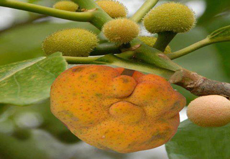

ডেউয়ার পরিচিতি
ডেউয়া ইংরেজি নাম-- monkey jackfruit এবং বৈজ্ঞানিক নাম --Artocarpus lacucha বা
Artocarpus lakoocha।
বিশাল আকৃতির ডেউয়া গাছ চিরসবুজ বৃক্ষ। পাতাগুলো বড় এবং খসখসে, অনেকটা ডুমুরের পাতার
মতো। এক একটি গাছ ২০-২৫ ফুট উঁচু হয়।

এর কাঠ বেশ উন্নত মানের, বড় বড় জিনিসের কাঠামো তৈরিতে ব্যবহৃত হয়। গাছে ফেব্রুয়ারির
শেষের দিকে ফুল আসে এবং জুন মাসের দিকে ফল পাকতে শুরু করে। ডেউয়া কাঁঠালের মতো
গুচ্ছফল। বাইরের অংশটি থাকে অসমান। ফল কাঁচা অবস্থায় সবুজ এবং পাকলে হলুদ হয়। ফলের
কাঁঠালের মতো ছোট ছোট কোষ থাকে। পাকা ফলের কোষের রং হয় লালচে হলুদ।
ডেউয়ার পুষ্টি উপাদান
ভিটামিন সি ও ক্যালসিয়ামের আধার বলা হয় ডেউয়া ফলকে। এগুলো ছাড়াও ডেউয়া ফলে রয়েছে অন্যান্য পুষ্টি উপাদান। ডেউয়া ফলের খাদ্যযোগ্য প্রতি ১০০ গ্রাম অংশে রয়েছে - খনিজ- ০.৮ গ্রাম, খাদ্যশক্তি- ৬৬ কিলোক্যালরি,আমিষ- ০.৭ গ্রাম,শর্করা- ১৩.৩ গ্রাম,ক্যালসিয়াম- ৫০ মিলিগ্রাম,লৌহ- ০.৫ মিলিগ্রাম, ভিটামিন বি১- ০.০২ মিলিগ্রাম,ভিটামিন বি২- ০.১৫ মিলিগ্রাম,ভিটামিন সি- ১৩৫ মিলিগ্রাম,পটাশিয়াম- ৩৪৮.৩৩ মিলিগ্রাম।
ডেউয়ার উপকারীতা
দেখতে অদ্ভুত এবং ভিন্ন স্বাদের ডেউয়া ফল মানুষের স্বাস্থ্যের জন্য খুবই উপকারী।
পাশাপাশি এর রয়েছে বেশ কিছু ভেষজ গুণও। যেমন -
যকৃতের নানা অসুখ নিরাময়ে সাহায্য করে ডেউয়া।
কোষ্ঠকাঠিন্য ও গ্যাসের কারণে পেটব্যথা কমাতে সহায়তা করে ফলটি।
দীর্ঘদিন অসুখে ভুগলে খাবারে রুচি থাকে না। রুচি ফিরিয়ে আনতে ডেউয়ার রস লবণ ও
গোলমরিচের গুঁড়া মিশিয়ে দুপুরে ভাত খাবার আগে খেতে হবে।
পেট পরিষ্কার করতে কাঁচা ডেউয়া ৮-১০ গ্রাম বেটে নিয়ে গরম পানিতে মিশিয়ে সকালে খালি
পেটে খেতে হবে।
গ্যাসের সমস্যা কমাতে পাকা ডেউয়ার দেড় চামচ রস আধা কাপ পানিতে মিশিয়ে এবং তাতে
সামান্য চিনি দিয়ে প্রতিদিন একবার করে এক সপ্তাহ খেতে হবে।
গাছের ছালের গুঁড়ো ত্বকের রুক্ষতা দূর করে এবং ব্রণের দুষিত পুঁজ বের করে দেয়।
ডেউয়ার ভিটামিন সি ত্বক, চুল, নখ, দাঁত ও মাঢ়ির নানা রোগ প্রতিরোধে সহায়তা করে।
এতে রয়েছে প্রচুর পরিমাণে ক্যালসিয়াম যা দাঁত ও হাড়ের ক্ষয়রোগ প্রতিরোধ করে।
ডেউয়াতে বিদ্যমান পটাশিয়াম রক্ত চলাচলে সহায়তা করে, রক্তচাপ নিয়ন্ত্রণে রাখে এবং
হৃদরোগ ও স্ট্রোকের ঝুঁকি কমায়।
ডেউয়া ওজন কমাতেও সাহায্য করে। এক কাপের চার ভাগের এক ভাগ পাকা ডেউয়ার রসের সাথে বাকি
তিন ভাগ কুসুম গরম পানি মিশিয়ে প্রতিদিন সকালে খালি পেটে খেতে হবে। ডেউয়া সব মৌসুমে
পাওয়া যায় না। তাই পাকা ডেউয়া শুকিয়ে সংরক্ষণ করুন। শুকনো ডেউয়া পরবর্তীতে পানিতে
ভিজিয়ে রেখে খেতে হয়।